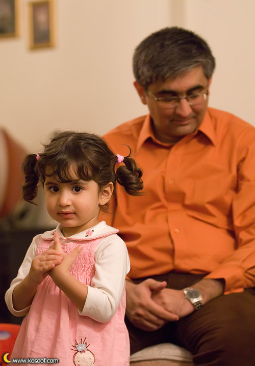

ایمان پاک نهاد:
"هوشنگ فرحبخش، وکیل پایه یک دادگستری" که بر روی یک سطح فلزی نقره ای رنگ حک و روی دیوار طبقه چهارم آپارتمانی در حوالی خیابان یوسف آباد تهران نصب شده، نشانی خوبی است تا مطمئن شوی که علی فرحبخش و خانواده اش در آن خانه میزبان جمعی از روزنامه نگاران و فعالان اجتماعی-سیاسی هستند. روزنامه نگاری که 11 ماه دور از خانه و خانواده اش در سلول های زندان اوین روزگار سپری کرد.
دیروز ( چهارشنبه )، 18 مهر ماه علی فرحبخش ، روزنامه نگار پذیرای کسانی شده بود که هر یک در گذشته نه چندان دور یا روزنامه ای را از دست داده و یا در گوشه ای از زندان بزرگ اوین گذران عمرکرده بودند.
سفید، سیاه، زرد و آبی به ترتیب رنگ دکمه های زنگ آپارتمانی است که اگر آبی را فشار دهی، علی فرحبخش که تازه شب قبلش از بند 350 اوین آزاد شده ، از آن سوی آیفون به داخل راهنمایی ات می کند: "خوش آمدید، طبقه چهارم"
پیش از همه، پدر علی فرحبخش با مو ها و ابروان سفید رنگش در را باز کرده و به استقبال می آید و پشت سر پسر تازه آزاد شده اش.
"چشم هایتان روشن آقای فرحبخش!"
11 ماه دوری، فرصتی کافی است برای دلتنگی یک پدر نسبت به فرزند خردسالش؛ شاید به همین دلیل است که علی فرحبخش لحظه ای چشم از دخترش برنمی دارد. دختری سه، چهار ساله که موهایش را از دو طرف بسته و لباسی صورتی رنگ بر تن دارد.

بر صورت میهمانان اگر بنگری چهره های آشنایی دیده می شود. احمد زیدآبادی روزنامه نگار کنار محسن کدیور، عضو هیات علمی کانون حکمت و فلسفه نشسته است. محمد بسته نگار، فعال ملی مذهبی در گوشه ای و زهدی، مدیرمسوول روزنامه ی توقیف شده آریا هم در گوشه ای دیگر. بهروز گرانپایه روزنامه نگار هم با اندکی فاصله پهلوی عیسی سحرخیز روزنامه نگار و مدیرکل امور مطبوعاتی وزارت ارشاد دولت اصلاحات نشسته است.
ژیلا بنی یعقوب و بهمن احمدی امویی، همسران روزنامه نگار هم روبروی هم نشسته اند. رضا تهرانی، عضو شورای سردبیری روزنامه توقیف شده صبح امروز، بدرالسادات مفیدی، دبیر انجمن صنفی روزنامه نگاران، کیوان صمیمی، مدیر مسوول نشریه توقیف شده نامه هم از دیگر میهمانان علی فرحبخش هستند.
روی مبل های قهوه ای رنگ نشسته اند و هر یک به زبانی به علی فرحبخش و خانواده اش تبریک می گویند.
پدر از خاطرات دوران وکالت و قضاوت خود می گوید و پسر از روزهای گذشته در زندان. بیش تر میهمانان طعم زندان را چشیده اند. به همین خاطر سعی می کنند میان حرف های فرحبخش چیز تازه ای جست و جو کنند.
برخی با کفش نشسته اند و برخی پاهایشان را روی کف پوش های چوبی خانه نهاده اند تا پس از ساعتی خوش و بش و گفت و گو در هال و پذیرایی " ال " شکل این خانه خداحافظی کنند و خانه را ترک.
دختر کوچولوی فرحبخش لحظه ای از کنار پدر دور نمی شود...
عکس ها :آرش آشوری نیا